The so called "Energy import" is inspired by PVOutput energy import chart.
If the generated power (Net power) is greater than the consumption, the energy import is no more raising.
PVOutput chart
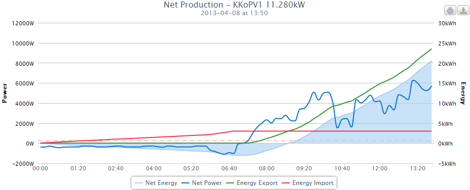
PVLng adoption
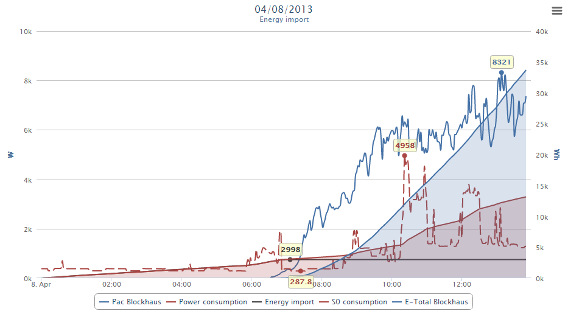
First there are 2 areas, the overall production (E-Total, blue) and overall consumption (Power consumption, red) over time.
Then the actual inverter yield (PAC Blockhaus, blue) and actual consumption (S0 consumption, dashed red).
The interesting part is the black Energy import spline, which stays by 2998 Wh since 07:08 here. This means, since 07:08 there is no energy import, only export.
Please note: Arrange the channels according their units to the axes!
Definition
Let's start with the meter channels for the areas.
I decided to put all "watt" channels on the left and all "watt hour" channels on the right axis.
E-Total
Definition
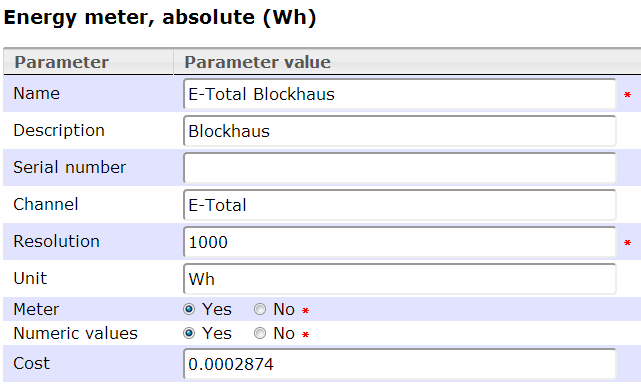
We define here a positive cost per watt hour to see later the income amount generated.
(We get here 28.74 cent per kilo watt hour == 0.0002874 Euro per watt hour)
Chart settings
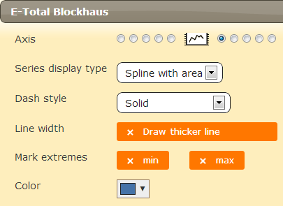
S0 consumption and Power consumption
Definition
Here we need a special channel type, the Sensor to Meter proxy.
We have to convert the actual power consumption (Power sensor in watt) into an meter channel (in watt hours) which also sums up the data.
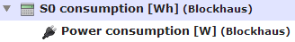
The consumption is a normal power sensor.
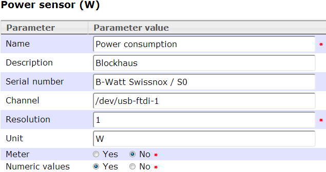
Here comes the proxy which convert the sensor to a meter channel!
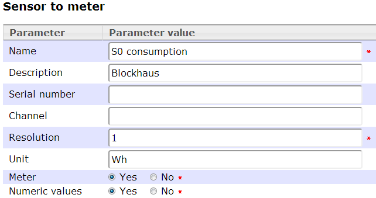
Chart settings
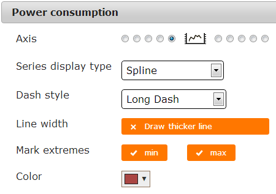 
For "Power consumtion" we are also intersted in peeak powers used.
PAC
Definition
Simply the actual generated inverter power:
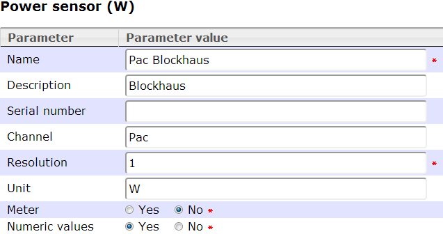
Chart settings
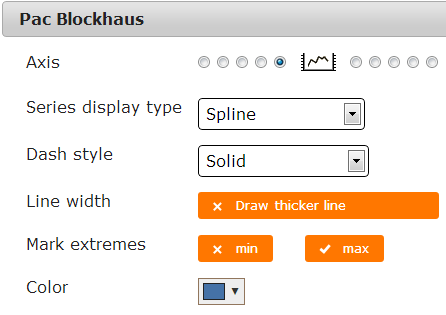
We are also interested in the max. value.
Energy Import
Definition
There we need the channel type "Internal consumption" based on the named model.
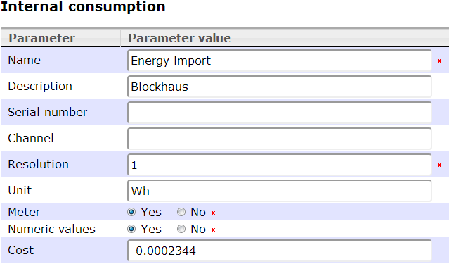
We define here a negative cost per Wh to see later the amount consumed.
(We pay here 23.44 cent per kilo watt hour == 0.0002344 Euro per watt hour)
Chart settings
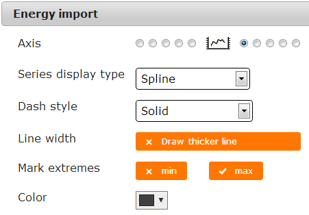
Now we can put this all together:

In the Charts view we will have this:
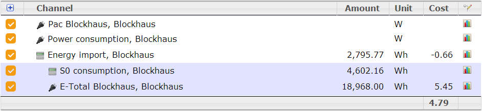
So we have consumed 4.6 kWh, but bought only 2.8 kWh and have a win of € 4.79 at the moment!
The Amount column will be filled only for channels with meter flag.
The Cost column will be filled only for meter channels with cost defined.
Created with the Personal Edition of HelpNDoc: Easily create HTML Help documents